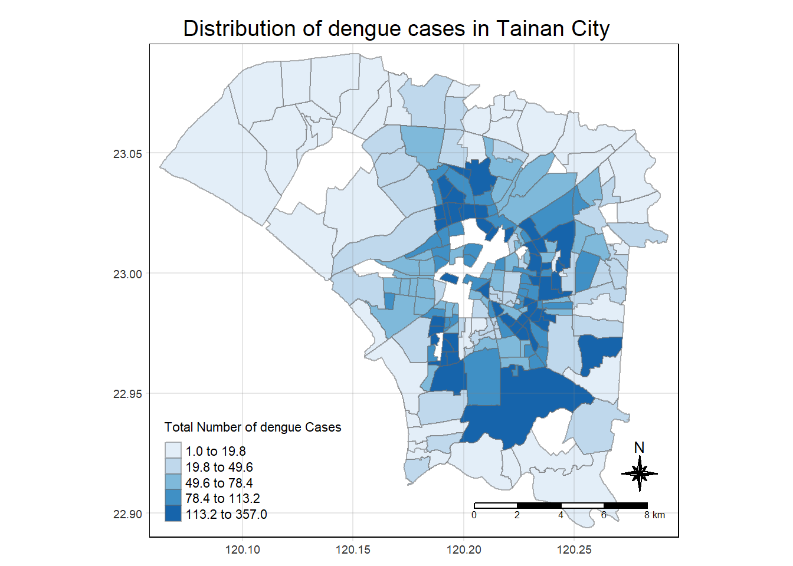

Code
pacman::p_load(sf,tidyverse, sfdep, tmap, knitr, lubridate, plotly) Dengue Hemorrhagic Fever (in short dengue fever) is one of the most widespread mosquito-borne diseases in the most tropical and subtropical regions. It is an acute disease caused by dengue virus infection which is transmitted by female Aedes aegypti and Aedes albopictus mosquitoes. In 2015, Taiwan had recorded the most severe dengue fever outbreak with more than 43,000 dengue cases and 228 deaths. Since then, the annual reported dengue fever cases were maintained at the level of not more than 200 cases. However, in 2023, Taiwan recorded 26703 dengue fever cases. Figure below reveals that more than 25,000 cases were reported at Tainan City.
if the distribution of dengue fever outbreak at Tainan City, Taiwan are independent from space and space and time.
If the outbreak is indeed spatial and spatio-temporal dependent, then, you would like to detect where are the clusters and outliers, and the emerging hot spot/cold spot areas.
The specific tasks of this take-home exercise are as follows:
Using appropriate function of sf and tidyverse, preparing the following geospatial data layer:
a study area layer in sf polygon features. It must be at village level and confined to the D01, D02, D04, D06, D07, D08, D32 and D39 counties of Tainan City, Taiwan.
a dengue fever layer within the study area in sf point features. The dengue fever cases should be confined to epidemiology week 31-50, 2023.
a derived dengue fever layer in spacetime s3 class of sfdep. It should contain, among many other useful information, a data field showing number of dengue fever cases by village and by epidemiology week.
Using the extracted data, perform global spatial autocorrelation analysis by using sfdep methods.
Using the extracted data, perform local spatial autocorrelation analysis by using sfdep methods.
Using the extracted data, perform emerging hotspot analysis by using sfdep methods.
Describe the spatial patterns revealed by the analysis above.
Two data sets are provided, they are:
TAINAN_VILLAGE, a geospatial data of village boundary of Taiwan. It is in ESRI shapefile format. The data is in Taiwan Geographic Coordinate System. (Source: Historical map data of the village boundary: TWD97 longitude and latitude)
Dengue_Daily.csv, an aspatial data of reported dengue cases in Taiwan since 1998. (Source: Dengue Daily Confirmed Cases Since 1998. Below are selected fields that are useful for this study:
發病日: Onset date
最小統計區中心點X: x-coordinate
最小統計區中心點Y: y-coordinate
pacman::p_load(sf,tidyverse, sfdep, tmap, knitr, lubridate, plotly) Importing TAINAN_VILLAGE.shp into R environment
tainan_village <- st_read(dsn = "data/geospatial", layer = "TAINAN_VILLAGE")Reading layer `TAINAN_VILLAGE' from data source
`C:\j00b00\IS415-GAA\Take-home_EX\Take-home_Ex02\data\geospatial'
using driver `ESRI Shapefile'
Simple feature collection with 649 features and 10 fields
Geometry type: POLYGON
Dimension: XY
Bounding box: xmin: 120.0269 ymin: 22.88751 xmax: 120.6563 ymax: 23.41374
Geodetic CRS: TWD97Checking the coordinate system of tainan_village simple feature data frame using st_crs.
st_crs(tainan_village)Coordinate Reference System:
User input: TWD97
wkt:
GEOGCRS["TWD97",
DATUM["Taiwan Datum 1997",
ELLIPSOID["GRS 1980",6378137,298.257222101,
LENGTHUNIT["metre",1]]],
PRIMEM["Greenwich",0,
ANGLEUNIT["degree",0.0174532925199433]],
CS[ellipsoidal,2],
AXIS["geodetic latitude (Lat)",north,
ORDER[1],
ANGLEUNIT["degree",0.0174532925199433]],
AXIS["geodetic longitude (Lon)",east,
ORDER[2],
ANGLEUNIT["degree",0.0174532925199433]],
USAGE[
SCOPE["Horizontal component of 3D system."],
AREA["Taiwan, Republic of China - onshore and offshore - Taiwan Island, Penghu (Pescadores) Islands."],
BBOX[17.36,114.32,26.96,123.61]],
ID["EPSG",3824]]Retrieving the geometry list-column.
st_geometry(tainan_village)Geometry set for 649 features
Geometry type: POLYGON
Dimension: XY
Bounding box: xmin: 120.0269 ymin: 22.88751 xmax: 120.6563 ymax: 23.41374
Geodetic CRS: TWD97
First 5 geometries:Importing csv data Dengue_Daily.csv into R environment
dengue_daily <- read_csv("data/aspatial/Dengue_Daily.csv")Reveal complete information of dengue_daily
Take note of 最小統計區中心點X and 最小統計區中心點Y columns. They are in character data type. Need to convert them to numeric later
head(dengue_daily)# A tibble: 6 × 26
發病日 個案研判日 通報日 性別 年齡層 居住縣市 居住鄉鎮 居住村里
<date> <chr> <date> <chr> <chr> <chr> <chr> <chr>
1 1998-01-02 None 1998-01-07 男 40-44 屏東縣 屏東市 None
2 1998-01-03 None 1998-01-14 男 30-34 屏東縣 東港鎮 None
3 1998-01-13 None 1998-02-18 男 55-59 宜蘭縣 宜蘭市 None
4 1998-01-15 None 1998-01-23 男 35-39 高雄市 苓雅區 None
5 1998-01-20 None 1998-02-04 男 55-59 宜蘭縣 五結鄉 None
6 1998-01-22 None 1998-02-19 男 20-24 桃園市 蘆竹區 None
# ℹ 18 more variables: 最小統計區 <chr>, 最小統計區中心點X <chr>,
# 最小統計區中心點Y <chr>, 一級統計區 <chr>, 二級統計區 <chr>,
# 感染縣市 <chr>, 感染鄉鎮 <chr>, 感染村里 <chr>, 是否境外移入 <chr>,
# 感染國家 <chr>, 確定病例數 <dbl>, 居住村里代碼 <chr>, 感染村里代碼 <chr>,
# 血清型 <chr>, 內政部居住縣市代碼 <chr>, 內政部居住鄉鎮代碼 <chr>,
# 內政部感染縣市代碼 <chr>, 內政部感染鄉鎮代碼 <chr>Extracting columns that are useful (COUNTYNAME, VILLNAME, VILLENG, TOWNID, geometry)
tainan_village <- tainan_village %>%
select(COUNTYNAME, VILLNAME, VILLENG, TOWNID, geometry)Filter TOWNID D01, D02, D04, D06, D07, D08, D32 and D39 from the tainan_village data
filtered_tainan_village <- tainan_village %>%
filter(TOWNID %in% c("D01", "D02", "D04", "D06", "D07", "D08", "D32", "D39"))Saving the filtered_tainan_village into RDS file
write_rds(filtered_tainan_village, "data/rds/filtered_tainan_village.rds")Plot the filtered_tainan_village
tm_shape(filtered_tainan_village) +
tm_polygons("TOWNID")
Extracting columns (發病日, 居住縣市, 居住鄉鎮, 居住村里, 最小統計區中心點X, 最小統計區中心點Y) that are useful
filtered_dengue_daily <- dengue_daily %>%
select(發病日, 居住縣市, 居住鄉鎮, 居住村里, 最小統計區中心點X, 最小統計區中心點Y)filter 居住縣市 to Tainan City
filtered_dengue_daily <- filtered_dengue_daily %>%
filter(居住縣市 == "台南市")Change 最小統計區中心點X, 最小統計區中心點Y datatype from chr to numeric
filtered_dengue_daily <- filtered_dengue_daily %>%
mutate(最小統計區中心點X = as.numeric(最小統計區中心點X),
最小統計區中心點Y = as.numeric(最小統計區中心點Y))Filter 發病日 to only the year 2023
filtered_dengue_daily2023 <- filtered_dengue_daily %>%
filter(year(發病日) == 2023)Extract week 31 to 50 which is 2023-07-31 to 2023-12-17
filtered_dengue_daily2023 <- filtered_dengue_daily %>%
filter(發病日 >= as.Date("2023-07-31") & 發病日 <= as.Date("2023-12-17"))Add a new column called epic_week
filtered_dengue_daily2023$epic_week <- week(filtered_dengue_daily2023$發病日)Rename all the columns to English
filtered_dengue_daily2023 <- filtered_dengue_daily2023 %>%
rename(onset_date = 發病日,
county = 居住縣市,
town = 居住鄉鎮,
village = 居住村里,
x_coordinate = 最小統計區中心點X,
y_coordinate = 最小統計區中心點Y)Remove None value from the village column
filtered_dengue_daily2023 <- filtered_dengue_daily2023 %>%
filter(village !="None")Group the dataset by village to get the number of dengue cases
dengue_cases_by_village <- filtered_dengue_daily2023 %>%
group_by(village, x_coordinate, y_coordinate) %>%
summarise(dengue_cases = n())Saving all files into RDS
write_rds(filtered_dengue_daily2023, "data/rds/filtered_dengue_daily2023.rds")
write_rds(dengue_cases_by_village, "data/rds/dengue_cases_by_village.rds")Checking the coordinate system of dengue_cases_by_week_village. Need to set the coordinate system to 3824 before join operation
st_crs(dengue_cases_by_village)Coordinate Reference System: NAChecking NA value in x_coordinate and y_coordinate
dengue_cases_by_village %>%
filter(is.na(x_coordinate) | is.na(y_coordinate))# A tibble: 8 × 4
# Groups: village, x_coordinate [8]
village x_coordinate y_coordinate dengue_cases
<chr> <dbl> <dbl> <int>
1 國平里 NA NA 1
2 崙頂里 NA NA 1
3 建南里 NA NA 1
4 後甲里 NA NA 1
5 復興里 NA NA 1
6 復華里 NA NA 3
7 辜厝里 NA NA 1
8 開南里 NA NA 1Removing NA value in x_coordinate and y_coordinate
dengue_cases_by_village <- dengue_cases_by_village[complete.cases(dengue_cases_by_village[, c("x_coordinate", "y_coordinate")]), ]Transforming dengue_cases_by_village into simple feature data frame and set the coordinate system to 3824
dengue_cases_by_village_sf <- st_as_sf(dengue_cases_by_village, coords = c("x_coordinate", "y_coordinate"), crs = 3824)Checking the coordinate system of dengue_cases_by_village_sf. Confirming that the coordinate system is 3824
st_crs(dengue_cases_by_village_sf)Coordinate Reference System:
User input: EPSG:3824
wkt:
GEOGCRS["TWD97",
DATUM["Taiwan Datum 1997",
ELLIPSOID["GRS 1980",6378137,298.257222101,
LENGTHUNIT["metre",1]]],
PRIMEM["Greenwich",0,
ANGLEUNIT["degree",0.0174532925199433]],
CS[ellipsoidal,2],
AXIS["geodetic latitude (Lat)",north,
ORDER[1],
ANGLEUNIT["degree",0.0174532925199433]],
AXIS["geodetic longitude (Lon)",east,
ORDER[2],
ANGLEUNIT["degree",0.0174532925199433]],
USAGE[
SCOPE["Horizontal component of 3D system."],
AREA["Taiwan, Republic of China - onshore and offshore - Taiwan Island, Penghu (Pescadores) Islands."],
BBOX[17.36,114.32,26.96,123.61]],
ID["EPSG",3824]]The boundaries of filtered_tainan_village intersect with dengue_cases_by_village_sf dengue case locations.
tainan_village_dengue_cases <- st_join(filtered_tainan_village, dengue_cases_by_village_sf, join = st_intersects)checking NA value in tainan_village_dengue_cases
tainan_village_dengue_cases %>%
filter(is.na(dengue_cases))Simple feature collection with 31 features and 6 fields
Geometry type: POLYGON
Dimension: XY
Bounding box: xmin: 120.1089 ymin: 22.92391 xmax: 120.2719 ymax: 23.06067
Geodetic CRS: TWD97
First 10 features:
COUNTYNAME VILLNAME VILLENG TOWNID village dengue_cases
165 臺南市 鹿耳里 Lu'er Vil. D06 <NA> NA
168 臺南市 文賢里 Wenxian Vil. D32 <NA> NA
170 臺南市 永明里 Yongming Vil. D39 <NA> NA
171 臺南市 鹽埕里 Yancheng Vil. D02 <NA> NA
172 臺南市 北華里 Beihua Vil. D04 <NA> NA
173 臺南市 華德里 Huade Vil. D04 <NA> NA
174 臺南市 福德里 Fude Vil. D04 <NA> NA
175 臺南市 長勝里 Zhangsheng Vil. D04 <NA> NA
176 臺南市 長興里 Zhangxing Vil. D04 <NA> NA
177 臺南市 大興里 Daxing Vil. D04 <NA> NA
geometry
165 POLYGON ((120.1332 23.04291...
168 POLYGON ((120.2458 22.94368...
170 POLYGON ((120.2695 23.02666...
171 POLYGON ((120.191 22.97498,...
172 POLYGON ((120.2035 23.00255...
173 POLYGON ((120.2053 23.02293...
174 POLYGON ((120.207 23.01694,...
175 POLYGON ((120.2198 23.01272...
176 POLYGON ((120.2103 23.00623...
177 POLYGON ((120.2156 23.00926...Removing NA value in tainan_village_dengue_cases
tainan_village_dengue_cases <- tainan_village_dengue_cases[!is.na(tainan_village_dengue_cases$dengue_cases), ]Summing the number of dengue cases by village
total_dengue_cases_by_village <- tainan_village_dengue_cases %>%
group_by(village) %>%
summarise(total_dengue_cases = sum(dengue_cases))Saving file to RDS
write_rds(total_dengue_cases_by_village, "data/rds/total_dengue_cases_by_village.rds")Plotting a chropleth map on the distribution of dengue cases in Tainan City
tmap_mode("plot")
tm_shape(total_dengue_cases_by_village) +
tm_fill(col = "total_dengue_cases",
style = "quantile",
palette = "Blues",
title = "Total Number of dengue Cases") +
tm_layout(main.title = "Distribution of dengue cases in Tainan City",
main.title.position = "center",
main.title.size = 1.2,
legend.height = 0.45,
legend.width = 0.35,
frame = TRUE) +
tm_borders(alpha = 0.5) +
tm_compass(type = "8star", size = 2) +
tm_scale_bar() +
tm_grid(alpha = 0.2)
Based on the chropleth map, it is observed that the distribution of dengue cases in Tainan City is not uniform. The distribution is concentrated in the central.
wm_q <- tainan_village_dengue_cases %>%
mutate(nb = st_contiguity(geometry),
wt = st_weights(nb, style = "W"),
.before = 1)wm_qSimple feature collection with 3923 features and 8 fields
Geometry type: POLYGON
Dimension: XY
Bounding box: xmin: 120.0627 ymin: 22.89401 xmax: 120.2925 ymax: 23.09144
Geodetic CRS: TWD97
First 10 features:
nb
1 60, 61, 62, 63, 64, 65, 66, 2123, 2124, 2857, 2858, 2859, 2860
2 3, 4, 5, 6, 7, 8, 9, 10, 11, 12, 2282, 2283, 2284, 2285, 2286, 2287, 2288, 2289, 2290, 2291, 2292, 2293, 2294, 2295, 2296, 2297, 2298, 2299, 2323, 2324, 2325, 2326, 2327, 2328, 2329, 2330, 2331, 2332, 2333, 2334, 2335, 2336, 2337, 2338, 2339, 2452, 2453, 2454, 2455, 2456, 2457, 2458, 2459, 2460, 2461, 3358, 3359, 3360, 3361, 3362, 3363, 3364, 3365, 3366
2.1 2, 4, 5, 6, 7, 8, 9, 10, 11, 12, 2282, 2283, 2284, 2285, 2286, 2287, 2288, 2289, 2290, 2291, 2292, 2293, 2294, 2295, 2296, 2297, 2298, 2299, 2323, 2324, 2325, 2326, 2327, 2328, 2329, 2330, 2331, 2332, 2333, 2334, 2335, 2336, 2337, 2338, 2339, 2452, 2453, 2454, 2455, 2456, 2457, 2458, 2459, 2460, 2461, 3358, 3359, 3360, 3361, 3362, 3363, 3364, 3365, 3366
2.2 2, 3, 5, 6, 7, 8, 9, 10, 11, 12, 2282, 2283, 2284, 2285, 2286, 2287, 2288, 2289, 2290, 2291, 2292, 2293, 2294, 2295, 2296, 2297, 2298, 2299, 2323, 2324, 2325, 2326, 2327, 2328, 2329, 2330, 2331, 2332, 2333, 2334, 2335, 2336, 2337, 2338, 2339, 2452, 2453, 2454, 2455, 2456, 2457, 2458, 2459, 2460, 2461, 3358, 3359, 3360, 3361, 3362, 3363, 3364, 3365, 3366
2.3 2, 3, 4, 6, 7, 8, 9, 10, 11, 12, 2282, 2283, 2284, 2285, 2286, 2287, 2288, 2289, 2290, 2291, 2292, 2293, 2294, 2295, 2296, 2297, 2298, 2299, 2323, 2324, 2325, 2326, 2327, 2328, 2329, 2330, 2331, 2332, 2333, 2334, 2335, 2336, 2337, 2338, 2339, 2452, 2453, 2454, 2455, 2456, 2457, 2458, 2459, 2460, 2461, 3358, 3359, 3360, 3361, 3362, 3363, 3364, 3365, 3366
2.4 2, 3, 4, 5, 7, 8, 9, 10, 11, 12, 2282, 2283, 2284, 2285, 2286, 2287, 2288, 2289, 2290, 2291, 2292, 2293, 2294, 2295, 2296, 2297, 2298, 2299, 2323, 2324, 2325, 2326, 2327, 2328, 2329, 2330, 2331, 2332, 2333, 2334, 2335, 2336, 2337, 2338, 2339, 2452, 2453, 2454, 2455, 2456, 2457, 2458, 2459, 2460, 2461, 3358, 3359, 3360, 3361, 3362, 3363, 3364, 3365, 3366
2.5 2, 3, 4, 5, 6, 8, 9, 10, 11, 12, 2282, 2283, 2284, 2285, 2286, 2287, 2288, 2289, 2290, 2291, 2292, 2293, 2294, 2295, 2296, 2297, 2298, 2299, 2323, 2324, 2325, 2326, 2327, 2328, 2329, 2330, 2331, 2332, 2333, 2334, 2335, 2336, 2337, 2338, 2339, 2452, 2453, 2454, 2455, 2456, 2457, 2458, 2459, 2460, 2461, 3358, 3359, 3360, 3361, 3362, 3363, 3364, 3365, 3366
2.6 2, 3, 4, 5, 6, 7, 9, 10, 11, 12, 2282, 2283, 2284, 2285, 2286, 2287, 2288, 2289, 2290, 2291, 2292, 2293, 2294, 2295, 2296, 2297, 2298, 2299, 2323, 2324, 2325, 2326, 2327, 2328, 2329, 2330, 2331, 2332, 2333, 2334, 2335, 2336, 2337, 2338, 2339, 2452, 2453, 2454, 2455, 2456, 2457, 2458, 2459, 2460, 2461, 3358, 3359, 3360, 3361, 3362, 3363, 3364, 3365, 3366
2.7 2, 3, 4, 5, 6, 7, 8, 10, 11, 12, 2282, 2283, 2284, 2285, 2286, 2287, 2288, 2289, 2290, 2291, 2292, 2293, 2294, 2295, 2296, 2297, 2298, 2299, 2323, 2324, 2325, 2326, 2327, 2328, 2329, 2330, 2331, 2332, 2333, 2334, 2335, 2336, 2337, 2338, 2339, 2452, 2453, 2454, 2455, 2456, 2457, 2458, 2459, 2460, 2461, 3358, 3359, 3360, 3361, 3362, 3363, 3364, 3365, 3366
2.8 2, 3, 4, 5, 6, 7, 8, 9, 11, 12, 2282, 2283, 2284, 2285, 2286, 2287, 2288, 2289, 2290, 2291, 2292, 2293, 2294, 2295, 2296, 2297, 2298, 2299, 2323, 2324, 2325, 2326, 2327, 2328, 2329, 2330, 2331, 2332, 2333, 2334, 2335, 2336, 2337, 2338, 2339, 2452, 2453, 2454, 2455, 2456, 2457, 2458, 2459, 2460, 2461, 3358, 3359, 3360, 3361, 3362, 3363, 3364, 3365, 3366
wt
1 0.07692308, 0.07692308, 0.07692308, 0.07692308, 0.07692308, 0.07692308, 0.07692308, 0.07692308, 0.07692308, 0.07692308, 0.07692308, 0.07692308, 0.07692308
2 0.015625, 0.015625, 0.015625, 0.015625, 0.015625, 0.015625, 0.015625, 0.015625, 0.015625, 0.015625, 0.015625, 0.015625, 0.015625, 0.015625, 0.015625, 0.015625, 0.015625, 0.015625, 0.015625, 0.015625, 0.015625, 0.015625, 0.015625, 0.015625, 0.015625, 0.015625, 0.015625, 0.015625, 0.015625, 0.015625, 0.015625, 0.015625, 0.015625, 0.015625, 0.015625, 0.015625, 0.015625, 0.015625, 0.015625, 0.015625, 0.015625, 0.015625, 0.015625, 0.015625, 0.015625, 0.015625, 0.015625, 0.015625, 0.015625, 0.015625, 0.015625, 0.015625, 0.015625, 0.015625, 0.015625, 0.015625, 0.015625, 0.015625, 0.015625, 0.015625, 0.015625, 0.015625, 0.015625, 0.015625
2.1 0.015625, 0.015625, 0.015625, 0.015625, 0.015625, 0.015625, 0.015625, 0.015625, 0.015625, 0.015625, 0.015625, 0.015625, 0.015625, 0.015625, 0.015625, 0.015625, 0.015625, 0.015625, 0.015625, 0.015625, 0.015625, 0.015625, 0.015625, 0.015625, 0.015625, 0.015625, 0.015625, 0.015625, 0.015625, 0.015625, 0.015625, 0.015625, 0.015625, 0.015625, 0.015625, 0.015625, 0.015625, 0.015625, 0.015625, 0.015625, 0.015625, 0.015625, 0.015625, 0.015625, 0.015625, 0.015625, 0.015625, 0.015625, 0.015625, 0.015625, 0.015625, 0.015625, 0.015625, 0.015625, 0.015625, 0.015625, 0.015625, 0.015625, 0.015625, 0.015625, 0.015625, 0.015625, 0.015625, 0.015625
2.2 0.015625, 0.015625, 0.015625, 0.015625, 0.015625, 0.015625, 0.015625, 0.015625, 0.015625, 0.015625, 0.015625, 0.015625, 0.015625, 0.015625, 0.015625, 0.015625, 0.015625, 0.015625, 0.015625, 0.015625, 0.015625, 0.015625, 0.015625, 0.015625, 0.015625, 0.015625, 0.015625, 0.015625, 0.015625, 0.015625, 0.015625, 0.015625, 0.015625, 0.015625, 0.015625, 0.015625, 0.015625, 0.015625, 0.015625, 0.015625, 0.015625, 0.015625, 0.015625, 0.015625, 0.015625, 0.015625, 0.015625, 0.015625, 0.015625, 0.015625, 0.015625, 0.015625, 0.015625, 0.015625, 0.015625, 0.015625, 0.015625, 0.015625, 0.015625, 0.015625, 0.015625, 0.015625, 0.015625, 0.015625
2.3 0.015625, 0.015625, 0.015625, 0.015625, 0.015625, 0.015625, 0.015625, 0.015625, 0.015625, 0.015625, 0.015625, 0.015625, 0.015625, 0.015625, 0.015625, 0.015625, 0.015625, 0.015625, 0.015625, 0.015625, 0.015625, 0.015625, 0.015625, 0.015625, 0.015625, 0.015625, 0.015625, 0.015625, 0.015625, 0.015625, 0.015625, 0.015625, 0.015625, 0.015625, 0.015625, 0.015625, 0.015625, 0.015625, 0.015625, 0.015625, 0.015625, 0.015625, 0.015625, 0.015625, 0.015625, 0.015625, 0.015625, 0.015625, 0.015625, 0.015625, 0.015625, 0.015625, 0.015625, 0.015625, 0.015625, 0.015625, 0.015625, 0.015625, 0.015625, 0.015625, 0.015625, 0.015625, 0.015625, 0.015625
2.4 0.015625, 0.015625, 0.015625, 0.015625, 0.015625, 0.015625, 0.015625, 0.015625, 0.015625, 0.015625, 0.015625, 0.015625, 0.015625, 0.015625, 0.015625, 0.015625, 0.015625, 0.015625, 0.015625, 0.015625, 0.015625, 0.015625, 0.015625, 0.015625, 0.015625, 0.015625, 0.015625, 0.015625, 0.015625, 0.015625, 0.015625, 0.015625, 0.015625, 0.015625, 0.015625, 0.015625, 0.015625, 0.015625, 0.015625, 0.015625, 0.015625, 0.015625, 0.015625, 0.015625, 0.015625, 0.015625, 0.015625, 0.015625, 0.015625, 0.015625, 0.015625, 0.015625, 0.015625, 0.015625, 0.015625, 0.015625, 0.015625, 0.015625, 0.015625, 0.015625, 0.015625, 0.015625, 0.015625, 0.015625
2.5 0.015625, 0.015625, 0.015625, 0.015625, 0.015625, 0.015625, 0.015625, 0.015625, 0.015625, 0.015625, 0.015625, 0.015625, 0.015625, 0.015625, 0.015625, 0.015625, 0.015625, 0.015625, 0.015625, 0.015625, 0.015625, 0.015625, 0.015625, 0.015625, 0.015625, 0.015625, 0.015625, 0.015625, 0.015625, 0.015625, 0.015625, 0.015625, 0.015625, 0.015625, 0.015625, 0.015625, 0.015625, 0.015625, 0.015625, 0.015625, 0.015625, 0.015625, 0.015625, 0.015625, 0.015625, 0.015625, 0.015625, 0.015625, 0.015625, 0.015625, 0.015625, 0.015625, 0.015625, 0.015625, 0.015625, 0.015625, 0.015625, 0.015625, 0.015625, 0.015625, 0.015625, 0.015625, 0.015625, 0.015625
2.6 0.015625, 0.015625, 0.015625, 0.015625, 0.015625, 0.015625, 0.015625, 0.015625, 0.015625, 0.015625, 0.015625, 0.015625, 0.015625, 0.015625, 0.015625, 0.015625, 0.015625, 0.015625, 0.015625, 0.015625, 0.015625, 0.015625, 0.015625, 0.015625, 0.015625, 0.015625, 0.015625, 0.015625, 0.015625, 0.015625, 0.015625, 0.015625, 0.015625, 0.015625, 0.015625, 0.015625, 0.015625, 0.015625, 0.015625, 0.015625, 0.015625, 0.015625, 0.015625, 0.015625, 0.015625, 0.015625, 0.015625, 0.015625, 0.015625, 0.015625, 0.015625, 0.015625, 0.015625, 0.015625, 0.015625, 0.015625, 0.015625, 0.015625, 0.015625, 0.015625, 0.015625, 0.015625, 0.015625, 0.015625
2.7 0.015625, 0.015625, 0.015625, 0.015625, 0.015625, 0.015625, 0.015625, 0.015625, 0.015625, 0.015625, 0.015625, 0.015625, 0.015625, 0.015625, 0.015625, 0.015625, 0.015625, 0.015625, 0.015625, 0.015625, 0.015625, 0.015625, 0.015625, 0.015625, 0.015625, 0.015625, 0.015625, 0.015625, 0.015625, 0.015625, 0.015625, 0.015625, 0.015625, 0.015625, 0.015625, 0.015625, 0.015625, 0.015625, 0.015625, 0.015625, 0.015625, 0.015625, 0.015625, 0.015625, 0.015625, 0.015625, 0.015625, 0.015625, 0.015625, 0.015625, 0.015625, 0.015625, 0.015625, 0.015625, 0.015625, 0.015625, 0.015625, 0.015625, 0.015625, 0.015625, 0.015625, 0.015625, 0.015625, 0.015625
2.8 0.015625, 0.015625, 0.015625, 0.015625, 0.015625, 0.015625, 0.015625, 0.015625, 0.015625, 0.015625, 0.015625, 0.015625, 0.015625, 0.015625, 0.015625, 0.015625, 0.015625, 0.015625, 0.015625, 0.015625, 0.015625, 0.015625, 0.015625, 0.015625, 0.015625, 0.015625, 0.015625, 0.015625, 0.015625, 0.015625, 0.015625, 0.015625, 0.015625, 0.015625, 0.015625, 0.015625, 0.015625, 0.015625, 0.015625, 0.015625, 0.015625, 0.015625, 0.015625, 0.015625, 0.015625, 0.015625, 0.015625, 0.015625, 0.015625, 0.015625, 0.015625, 0.015625, 0.015625, 0.015625, 0.015625, 0.015625, 0.015625, 0.015625, 0.015625, 0.015625, 0.015625, 0.015625, 0.015625, 0.015625
COUNTYNAME VILLNAME VILLENG TOWNID village dengue_cases
1 臺南市 青草里 Qingcao Vil. D06 青草里 2
2 臺南市 保安里 Bao'an Vil. D32 保安里 2
2.1 臺南市 保安里 Bao'an Vil. D32 保安里 3
2.2 臺南市 保安里 Bao'an Vil. D32 保安里 1
2.3 臺南市 保安里 Bao'an Vil. D32 保安里 1
2.4 臺南市 保安里 Bao'an Vil. D32 保安里 1
2.5 臺南市 保安里 Bao'an Vil. D32 保安里 1
2.6 臺南市 保安里 Bao'an Vil. D32 保安里 1
2.7 臺南市 保安里 Bao'an Vil. D32 保安里 1
2.8 臺南市 保安里 Bao'an Vil. D32 保安里 5
geometry
1 POLYGON ((120.1176 23.08387...
2 POLYGON ((120.2304 22.93544...
2.1 POLYGON ((120.2304 22.93544...
2.2 POLYGON ((120.2304 22.93544...
2.3 POLYGON ((120.2304 22.93544...
2.4 POLYGON ((120.2304 22.93544...
2.5 POLYGON ((120.2304 22.93544...
2.6 POLYGON ((120.2304 22.93544...
2.7 POLYGON ((120.2304 22.93544...
2.8 POLYGON ((120.2304 22.93544...moranI <- global_moran(wm_q$dengue_cases,
wm_q$nb,
wm_q$wt)glimpse(moranI)List of 2
$ I: num 0.146
$ K: num 11.7This result indicates indicates spatial clustering of dengue cases in Tainan City. The value is 0.146 which is positive.
global_moran_test(wm_q$dengue_cases,
wm_q$nb,
wm_q$wt)
Moran I test under randomisation
data: x
weights: listw
Moran I statistic standard deviate = 67.342, p-value < 2.2e-16
alternative hypothesis: greater
sample estimates:
Moran I statistic Expectation Variance
1.455863e-01 -2.549720e-04 4.690216e-06 The p-value is close to 0 which means that the null hypothesis is rejected. This indicates that the distribution of dengue cases in Tainan City is not random. The alternative hypothesis is greater which shows that there is a spatial clustering of dengue cases in Tainan City.
set.seed(1234)global_moran_perm(wm_q$dengue_cases,
wm_q$nb,
wm_q$wt,
nsim = 99)
Monte-Carlo simulation of Moran I
data: x
weights: listw
number of simulations + 1: 100
statistic = 0.14559, observed rank = 100, p-value < 2.2e-16
alternative hypothesis: two.sidedThe results shows that the is a spatial autocorrelation of dengue cases in Tainan City. Which is consistent with the previous result.
lisa <- wm_q %>%
mutate(local_moran = local_moran(
dengue_cases, nb, wt, nsim = 99),
.before = 1) %>%
unnest(local_moran)tmap_mode("plot")
tm_shape(lisa) +
tm_fill("ii") +
tm_borders(alpha = 0.5) +
tm_view(set.zoom.limits = c(6,8)) +
tm_layout(main.title = "local Moran's I of Dengue Cases",
main.title.size = 0.8)tmap_mode("plot")
tm_shape(lisa) +
tm_fill("p_ii_sim") +
tm_borders(alpha = 0.5) +
tm_layout(main.title = "p-value of local Moran's I",
main.title.size = 0.8)tmap_mode("plot")
map1 <- tm_shape(lisa) +
tm_fill("ii") +
tm_borders(alpha = 0.5) +
tm_view(set.zoom.limits = c(6,8)) +
tm_layout(main.title = "local Moran's I of Dengue Cases",
main.title.size = 0.8)
map2 <- tm_shape(lisa) +
tm_fill("p_ii",
breaks = c(0, 0.001, 0.01, 0.05, 1),
labels = c("0.001", "0.01", "0.05", "Not sig")) +
tm_borders(alpha = 0.5) +
tm_layout(main.title = "p-value of local Moran's I",
main.title.size = 0.8)
tmap_arrange(map1, map2, ncol = 2)lisa_sig <- lisa %>%
filter(p_ii < 0.05)
tmap_mode("plot")
tm_shape(lisa) +
tm_polygons() +
tm_borders(alpha = 0.5) +
tm_shape(lisa_sig) +
tm_fill("mean") +
tm_borders(alpha = 0.4)The map show that there are clustering of dengue cases in Tainan City.
The red area indicates that there are high-high clustering of dengue cases.
The green area indicates that there are low-low clustering of dengue cases.
The purple area indicate that there are low-high clustering of dengue cases which means that dengue cases are surrounded by areas with high dengue cases but they have lesser dengue cases which may indicate that the area is good in controlling dengue cases.
The yellow area indicates that there are high-low clustering of dengue cases but are surrounded by areas with higher dengue cases. They might need to take extra precaution to prevent dengue cases from increasing.
wm_idw <- tainan_village_dengue_cases %>%
mutate(nb = st_contiguity(geometry),
wts = st_inverse_distance(nb, geometry,
scale = 1,
alpha = 1),
.before = 1)HCSA <- wm_idw %>%
mutate(local_Gi = local_gstar_perm(
dengue_cases, nb, wt, nsim = 99),
.before = 1) %>%
unnest(local_Gi)
HCSASimple feature collection with 3923 features and 16 fields
Geometry type: POLYGON
Dimension: XY
Bounding box: xmin: 120.0627 ymin: 22.89401 xmax: 120.2925 ymax: 23.09144
Geodetic CRS: TWD97
# A tibble: 3,923 × 17
gi_star e_gi var_gi p_value p_sim p_folded_sim skewness kurtosis nb
<dbl> <dbl> <dbl> <dbl> <dbl> <dbl> <dbl> <dbl> <nb>
1 -2.66 2.54e-4 3.56e- 9 -2.87 4.05e-3 0.02 0.01 0.378 <int>
2 -4.20 2.45e-4 8.42e-10 -4.01 6.11e-5 0.02 0.01 0.343 <int>
3 -4.20 2.62e-4 9.14e-10 -4.40 1.10e-5 0.02 0.01 0.119 <int>
4 -4.20 2.52e-4 8.69e-10 -4.17 3.00e-5 0.02 0.01 0.173 <int>
5 -4.20 2.56e-4 8.54e-10 -4.36 1.31e-5 0.02 0.01 0.0801 <int>
6 -4.20 2.52e-4 8.95e-10 -4.09 4.28e-5 0.02 0.01 0.321 <int>
7 -4.20 2.55e-4 9.39e-10 -4.12 3.77e-5 0.02 0.01 0.467 <int>
8 -4.20 2.57e-4 8.43e-10 -4.42 1.00e-5 0.02 0.01 0.202 <int>
9 -4.20 2.50e-4 9.47e-10 -3.92 8.94e-5 0.02 0.01 0.0967 <int>
10 -4.20 2.61e-4 6.91e-10 -5.01 5.44e-7 0.02 0.01 0.192 <int>
# ℹ 3,913 more rows
# ℹ 8 more variables: wts <list>, COUNTYNAME <chr>, VILLNAME <chr>,
# VILLENG <chr>, TOWNID <chr>, village <chr>, dengue_cases <int>,
# geometry <POLYGON [°]>tmap_mode("plot")
tm_shape(HCSA) +
tm_fill("gi_star") +
tm_borders(alpha = 0.5) +
tm_view(set.zoom.limits = c(6,8))From the map above, we can see that there is spatial clustering of dengue cases in Tainan City. The red area indicates that there are low gi* values which means are cold spot which the green area indicates that there are high gi* values which means are hot spot.
tmap_mode("plot")
tm_shape(HCSA) +
tm_fill("p_sim") +
tm_borders(alpha = 0.5)The map show that there most of the area are low p-value which means positive spatial autocorrelation. While some areas are dark brown.
tmap_mode("plot")
map1 <- tm_shape(HCSA) +
tm_fill("gi_star") +
tm_borders(alpha = 0.5) +
tm_view(set.zoom.limits = c(6,8)) +
tm_layout(main.title = "Gi* of Dengue Cases",
main.title.size = 0.8)
map2 <- tm_shape(HCSA) +
tm_fill("p_value",
breaks = c(0, 0.001, 0.01, 0.05, 1),
labels = c("0.001", "0.01", "0.05", "Not sig")) +
tm_borders(alpha = 0.5) +
tm_layout(main.title = "p-value of Gi*",
main.title.size = 0.8)
tmap_arrange(map1, map2, ncol = 2)Both maps show that area that are low gi* value, their p value are also low.
HCSA_sig <- HCSA %>%
filter(p_sim < 0.05)
tmap_mode("plot")
tm_shape(HCSA) +
tm_polygons() +
tm_borders(alpha = 0.5) +
tm_shape(HCSA_sig) +
tm_fill("gi_star") +
tm_borders(alpha = 0.4)The maps shows that there are quite a few hot spots (represented in dark green) around the center of the map. There are also a few cold spots (represented in dark red) which are not near the hot spots.
Importing RDS files
filtered_tainan_village <- read_rds("data/rds/filtered_tainan_village.rds")
filtered_dengue_daily2023 <- read_rds("data/rds/filtered_dengue_daily2023.rds")Group dataset by epic_week, village
dengue_cases_by_week_village <- filtered_dengue_daily2023 %>%
group_by(epic_week, village, x_coordinate, y_coordinate) %>%
summarise(dengue_cases = n())Removing NA value in x_coordinate and y_coordinate
dengue_cases_by_week_village <- dengue_cases_by_week_village[complete.cases(dengue_cases_by_week_village[, c("x_coordinate", "y_coordinate")]), ]Transforming dengue_cases_by_week_village into simple feature data frame and set the coordinate system to 3824
dengue_cases_by_week_village_sf <- st_as_sf(dengue_cases_by_week_village, coords = c("x_coordinate", "y_coordinate"), crs = 3824)Checking the coordinate system of dengue_cases_by_week_village_sf
st_crs(dengue_cases_by_week_village_sf)Coordinate Reference System:
User input: EPSG:3824
wkt:
GEOGCRS["TWD97",
DATUM["Taiwan Datum 1997",
ELLIPSOID["GRS 1980",6378137,298.257222101,
LENGTHUNIT["metre",1]]],
PRIMEM["Greenwich",0,
ANGLEUNIT["degree",0.0174532925199433]],
CS[ellipsoidal,2],
AXIS["geodetic latitude (Lat)",north,
ORDER[1],
ANGLEUNIT["degree",0.0174532925199433]],
AXIS["geodetic longitude (Lon)",east,
ORDER[2],
ANGLEUNIT["degree",0.0174532925199433]],
USAGE[
SCOPE["Horizontal component of 3D system."],
AREA["Taiwan, Republic of China - onshore and offshore - Taiwan Island, Penghu (Pescadores) Islands."],
BBOX[17.36,114.32,26.96,123.61]],
ID["EPSG",3824]]The boundaries of filtered_tainan_village intersect with dengue_cases_by_week_village_sf dengue case locations.
tainan_week_village_dengue_cases <- st_join(filtered_tainan_village, dengue_cases_by_week_village_sf, join = st_intersects)Checking NA value in tainan_week_village_dengue_cases
tainan_week_village_dengue_cases %>%
filter(is.na(dengue_cases))Simple feature collection with 31 features and 7 fields
Geometry type: POLYGON
Dimension: XY
Bounding box: xmin: 120.1089 ymin: 22.92391 xmax: 120.2719 ymax: 23.06067
Geodetic CRS: TWD97
First 10 features:
COUNTYNAME VILLNAME VILLENG TOWNID epic_week village dengue_cases
165 臺南市 鹿耳里 Lu'er Vil. D06 NA <NA> NA
168 臺南市 文賢里 Wenxian Vil. D32 NA <NA> NA
170 臺南市 永明里 Yongming Vil. D39 NA <NA> NA
171 臺南市 鹽埕里 Yancheng Vil. D02 NA <NA> NA
172 臺南市 北華里 Beihua Vil. D04 NA <NA> NA
173 臺南市 華德里 Huade Vil. D04 NA <NA> NA
174 臺南市 福德里 Fude Vil. D04 NA <NA> NA
175 臺南市 長勝里 Zhangsheng Vil. D04 NA <NA> NA
176 臺南市 長興里 Zhangxing Vil. D04 NA <NA> NA
177 臺南市 大興里 Daxing Vil. D04 NA <NA> NA
geometry
165 POLYGON ((120.1332 23.04291...
168 POLYGON ((120.2458 22.94368...
170 POLYGON ((120.2695 23.02666...
171 POLYGON ((120.191 22.97498,...
172 POLYGON ((120.2035 23.00255...
173 POLYGON ((120.2053 23.02293...
174 POLYGON ((120.207 23.01694,...
175 POLYGON ((120.2198 23.01272...
176 POLYGON ((120.2103 23.00623...
177 POLYGON ((120.2156 23.00926...Removing NA value in tainan_village_dengue_cases
tainan_week_village_dengue_cases <- tainan_week_village_dengue_cases[!is.na(tainan_week_village_dengue_cases$dengue_cases), ]Count unique number of villages
unique_villages <-length(unique(tainan_week_village_dengue_cases$VILLNAME))
print(unique_villages)[1] 222Remove geometry column from total_cases_by_week_village
tainan_week_village_dengue_cases_df <- as.data.frame(tainan_week_village_dengue_cases)
tainan_week_village_dengue_cases_df <- tainan_week_village_dengue_cases_df %>% select(-geometry)Keep useful columns (VILLNAME, epic_week, dengue_cases)
tainan_week_village_dengue_cases_df <- tainan_week_village_dengue_cases_df[, c("VILLNAME", "epic_week", "dengue_cases")]Remove duplicate rows
tainan_week_village_dengue_cases_df <- tainan_week_village_dengue_cases_df[!duplicated(tainan_week_village_dengue_cases_df[, c("VILLNAME", "epic_week")]), ]data <- crossing(VILLNAME = unique(tainan_week_village_dengue_cases_df$VILLNAME), epic_week = unique(tainan_week_village_dengue_cases_df$epic_week))Merging the data and replace NA vlues with 0
tainan_week_village_dengue_cases_df <- data %>%
left_join(tainan_week_village_dengue_cases_df, by = c("VILLNAME", "epic_week")) %>%
replace_na(list(dengue_cases = 0))Checking the dimension
print(dim(tainan_week_village_dengue_cases_df))[1] 4662 3filter the tainan_week_village_dengue_cases_df to only the unique villages
filtered_tainan_village_2 <- filtered_tainan_village %>%
filter(VILLNAME %in% unique(tainan_week_village_dengue_cases_df$VILLNAME))Check the number of unique villages in the filtered dataset
print(length(unique(filtered_tainan_village_2$VILLNAME)))[1] 222Check the number of unique locations
num_unique_locations_filtered_taiwan_village_2 <- nrow(unique(filtered_tainan_village))
print(num_unique_locations_filtered_taiwan_village_2)[1] 258Remove duplicate from filtered_tainan_village_2 and check the number of unique locations in filtered_tainan_village_2
filtered_tainan_village_2 <- filtered_tainan_village_2[!duplicated(filtered_tainan_village_2$VILLNAME), ]
num_unique_locations_filtered_taiwan_village_2 <- nrow(unique(filtered_tainan_village_2))
print(num_unique_locations_filtered_taiwan_village_2)[1] 222class(filtered_tainan_village_2)[1] "sf" "data.frame"class(tainan_week_village_dengue_cases_df)[1] "tbl_df" "tbl" "data.frame"Creating a Time Series Cube
dengue_st <- spacetime(tainan_week_village_dengue_cases_df, filtered_tainan_village_2,
.loc_col = "VILLNAME",
.time_col = "epic_week")Checking if the data is a spacetime object
is_spacetime_cube(dengue_st)[1] TRUEDeriving the spatial weights
dengue_nb <- dengue_st %>%
activate("geometry") %>%
mutate(nb = include_self(st_contiguity(geometry)),
wt = st_inverse_distance(nb, geometry,
scale = 1,
alpha = 1),
.before = 1) %>%
set_nbs("nb") %>%
set_wts("wt")Checking if the data is a spacetime object
is_spacetime(dengue_nb)[1] TRUEis_spacetime_cube(dengue_nb)[1] TRUEgi_stars <- dengue_nb %>%
group_by(epic_week) %>%
mutate(gi_star = local_gstar_perm(
dengue_cases, nb, wt)) %>%
unnest(gi_star)Use VILLANME = “一甲里” to test the Mann-Kendall Test
cbg <- gi_stars %>%
ungroup() %>%
filter(VILLNAME == "一甲里") |>
select(VILLNAME, epic_week, gi_star)Plotting the results
ggplot(data = cbg,
aes(x = epic_week,
y = gi_star)) +
geom_line() +
theme_light()Creating an interative plot by using ggplotly()
p <- ggplot(data = cbg,
aes(x = epic_week,
y = gi_star)) +
geom_line() +
theme_light()
ggplotly(p)cbg %>%
summarise(mk = list(
unclass(
Kendall::MannKendall(gi_star)))) %>%
tidyr::unnest_wider(mk)# A tibble: 1 × 5
tau sl S D varS
<dbl> <dbl> <dbl> <dbl> <dbl>
1 0.00952 0.976 2 210 1097.Replicate this for each location using groupby()
ehsa <- gi_stars %>%
group_by(epic_week) %>%
summarise(mk = list(
unclass(
Kendall::MannKendall(gi_star)))) %>%
tidyr::unnest_wider(mk)Arrange to show significant emerging hot/cold spots
emerging <- ehsa %>%
arrange(sl, abs(tau)) %>%
slice(1:5)ehsa <- emerging_hotspot_analysis(
x = dengue_st,
.var = "dengue_cases",
k = 1,
nsim = 99
)Visualizing the distribution of EHSA classes
ggplot(data = ehsa,
aes(x = classification)) +
geom_bar()Visualising EHSA
tainan_ehsa <- filtered_tainan_village %>%
left_join(ehsa,
by = join_by(VILLNAME == location))Plot a catergoricaal choropleth map of EHSA
ehsa_sig <- tainan_ehsa %>%
filter(p_value < 0.05)
tmap_mode("plot")
tm_shape(tainan_ehsa) +
tm_polygons() +
tm_borders(alpha = 0.5) +
tm_shape(ehsa_sig) +
tm_fill("classification") +
tm_borders(alpha = 0.4)After finishing Take-Home Exercise 2, I realized that I need more practice in working with data. Be it data wrangling or data manipulation. I had to try different ways to solve errors and problems during the exercise which took out a lot of my time.
This Take-Home Exercise 2 had help me to understand the different types of analyses like finding clustering and outliers.
When attempting to do Take-Home Exercise 2, I had faced many errors, making it quite challenging to complete but it taught me a lot about what I need to work on to do better in Take-Home Exercise 3 and the final project.